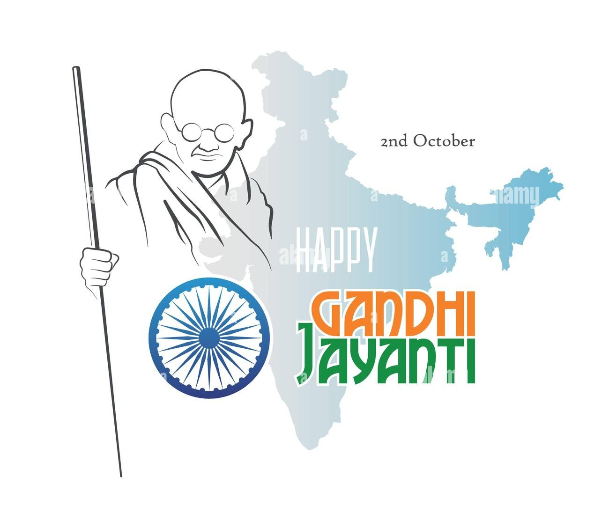

Written by ശശിധരൻ യു എൻ

Type: കവിത
Written by: ശശിധരൻ യു എൻ
പടിക്കു പുറത്ത് താഴെക്കാണുന്ന വസ്തുക്കൾ ചിതറിക്കിടന്നിരുന്നു.
രോമരഹിതമായ ഒരു തല പ്രാചീനമായ ഒരു കണ്ണട ഒരു ഊന്നുവടി. രണ്ടു മൂന്നു പുസ്തകങ്ങൾ. ഇവ ചേർത്തു വെച്ചാൽ നമുക്കൊരു രാഷ്ട്രം പണിയാം.